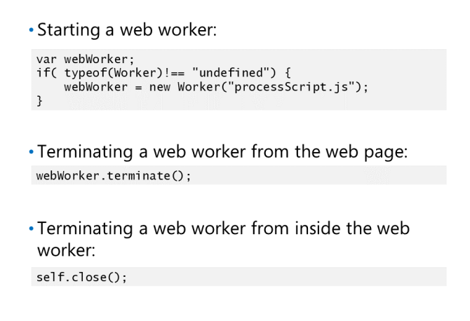
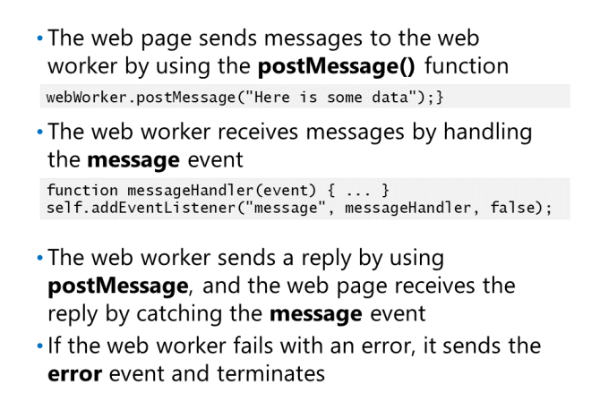
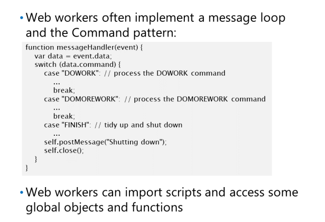
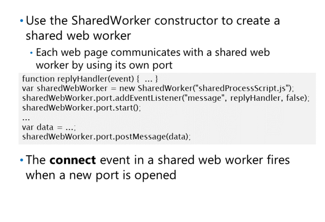

Tworzenie i zabijanie Dedicated Web Worker

Worker jest idealny do wykonywania długotrwałego zadania
w imieniu strony internetowej, na przykład przesyłając duży plik lub przetwarzając dużą ilość danych.
Aby utworzyć dedykowanego pracownika sieci web, najpierw należy utworzyć
nowy obiekt roboczy. Konstruktor Workera
oczekuje adresu URL pliku JavaScript jako parametru.
Ten plik JavaScript zawiera kod internetowy
pracownika. Poniższy przykładowy kod sprawdza
czy przeglądarka obsługuje pracowników sieci, a następnie
tworzy nowy proces roboczy, który uruchamia JavaScript
kod w pliku processScript.js:
Ważne jest, aby zrozumieć, że adres URL skryptu to plik hostowany w Internecie, który musi być jego częścią
aplikacja internetowa jako strona HTML5 uruchamiająca skrypt; nie można użyć tego mechanizmu do uruchomienia JavaScript
kod znajdujący się w innej witrynie.
Pracownicy sieci Web kończą się automatycznie, gdy strona zawierająca jest zamknięta, a zasoby używane przez
pracownik sieciowy jest zwolniony. Jednak strona internetowa, która tworzy dedykowanego pracownika sieci, może zakończyć sieć
pracownik w dowolnym momencie za pomocą funkcji terminate ():
Możesz utworzyć wbudowany moduł roboczy na kilka różnych sposobów. Poniższy przykład kodu tworzy obiekt Blob
zawierający kod JavaScript dla Workera sieci, a następnie używa funkcji createObjectURL() w pliku
Obiekt URL, aby utworzyć adres URL, który odwołuje się do tego obiektu. Kod przekazuje ten adres URL do Worker
konstruktor.
nną techniką jest zdefiniowanie kodu dla pracownika sieci w elemencie script, jak pokazano w
następującym przykładzie:
Komunikacja z Dedicated Web Worker

Web worker scripts są całkowicie odizolowane od
strony internetowej, co oznacza, że nie mają dostępu
do obiektów na tej stronie lub w DOM. Zamiast tego strona internetowa i web worker
komunikują się, przekazując sobie wiadomości.
Aby wysłać wiadomość do web worker, strona internetowa
może korzystać z funkcji postMessage(). Ta funkcja przyjmuje parametr
zawierający dane do wysłania do web workera.
Ten parametr może być łańcuchem lub obiektem JSON.
Aby otrzymać wiadomość, web worker obsługuje
zdarzenie wiadomości. Aby wysłać wiadomość
z powrotem do strony internetowej proces jest odwrócony; web worker używa postMessage ()
, a strona internetowa odbiera wiadomość, obsługując zdarzenie komunikatu web workera.
Obiekt zdarzenia przekazany do procedury obsługi błędów zawiera następujące właściwości:
• message. A human-readable error message.
• filename. The name of the script file (as a URL) in which the error occurred.
• lineno. The line number of the script file where the error occurred.
Structure of a Web Worker

Typowy Web Worker używa zdarzenia message do
odbierania wiadomości, a następnie wykonuje przetwarzanie
na podstawie danych zawartych w wiadomości przed czekaniem
do następnej wiadomości. Powszechnym idiomem jest
zaimplementuj wzorzec poleceń, w którym każdy
wiadomość zawiera pole wskazujące akcję
który powinien wykonać Web Worker. Inne pola
może zawierać informacje, które Web Worker
powinien przetworzyć, wykonując akcję. Dla
na przykład kod JavaScript dla strony internetowej może
zbuduj wiadomość zawierającą akcję
„DOWORK”, wraz z danymi w sieci
Web Worker powinien przetworzyć:
Web Worker
sam mogłby delegować pracę innym Web Workerom, które tworzy i którymi zarządza, pozostawiając swobodę obsługi
wiadomości po ich otrzymaniu.
Web Worker może wymagać dostępu do funkcji i narzędzi zdefiniowanych w innych plikach JavaScript. Na przykład
Web Worker może korzystać z biblioteki jQuery w celu wysyłania żądań do zewnętrznej usługi internetowej. Web Worker robi
nie na DOM, więc nie można odwoływać się do skryptów za pomocą elementów
script
(także wielu z jQuery
funkcje uzyskujące dostęp do DOM lub obiektu Window spowodują błędy w skrypcie procesu roboczego).Zamiast tego
pracownik WWW może korzystać z funkcji importScripts(), jak pokazano w poniższym przykładzie:
importScripts("myfunctions.js");
Web Workery mają dostęp do obiektu navigator. Ten obiekt zawiera informacje, które Web Worker
może używać identyfikatora przeglądarki, w tym appName, appVersion, platformy i userAgent. Web Workery
mają również dostęp tylko do odczytu do obiektu location, który zapewnia informacje o adresie URL
bieżąca strona, taka jak hostname, pathname, and port properties.
Tworzenie Shared Web Worker

dedicated web worker jest dostępny tylko z poziomu
strona, która to zadeklarowała. Aby utworzyć web workera
który jest dostępny ze wszystkich stron w sieci
aplikacji, możesz utworzyć shared web worker.
Udostępniasz shared web workera za pomocą
Konstruktora SharedWorker. Jednak aby włączyć
wiele stron do wysyłania wiadomości do web
worker, każda strona ma własny port, którego używa.
strona wysyła wiadomości do web workera
przez jego port za pomocą postMessage()
Wszelkie odpowiedzi są odbierane za pomocą
zdarzenie message na tym samym porcie. Następujące
przykładowy kod pokazuje, jak shared web workera WWW do wysyłania i odbierania wiadomości. Zauważ, że a
strona internetowa musi użyć funkcji start() portu przed wysłaniem pierwszego komunikatu. Ta funkcja ostrzega
web workera, który ustanawia nowe połączenie i umożliwia mu przygotowanie się do odbierania wiadomości
na tym porcie:
shared web worker wysyła odpowiedź z powrotem na stronę internetową za pomocą funkcji postMessage() portu
że strona się otworzyła. Obecnie mechanizm obsługi zdarzeń shared web workers działa tak że
nie zapewnia żadnego wbudowanego sposobu identyfikowania, który port należy do której strony internetowej, więc web worker must
track this information itself.